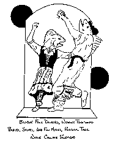

Click HERE to register your comments...or improve the recipe.Or do you want to take another look at the homepage MENU?
Or do you want to SEARCH for something specific?
Or do you want to take another look at the homepage MENU?
Or do you want to SEARCH for something specific?
Basque Seafood Chowder
A pot of plenty, redolent of the Andorras--serve hot as a meal to 8-10 people.
-

- 2 Tablespoons olive oil
- 3 garlic cloves, minced
- 3 carrots, cut in triangle chunks
- 2 green peppers, seeded and cut into triangles
- 1 red pepper, seeded and cut into triangles
- 1 cup celery, cut into triangular chunks
- 1 onion, sliced into rings
- 4 tomatoes, peeled and chopped
- 1 lb. mushrooms, quartered
- 1 cup zucchini, quartered lengthwise and cut into chunks
- 1 cup eggplant, diced
- 1 lb. shrimp, peeled
- 1/2 lb. scallops
- 1/2 lb. crabmeat--or 4 whole blue crabs, split and cleaned
- 1/2 lb. fish fillets, cut into chunks
- 2 8-oz. tins of chopped clams
- 1 cup dry white vermouth
- 1 teaspoon cayenne
- salt and pepper
Heat oil in a Dutch oven over medium heat. Saute garlic for a minute, then add carrots, peppers, celery, and onion. Cook until onion is translucent. Add tomatoes and cook down over medium heat for 10-15 minutes, stirring often. Stir in mushrooms and eggplant and cook til just tender--about 15 minutes. Add zucchini and all seafood except the clams to the chowder (you can pour in the clam juice), then pour the vermouth over all. Reduce heat and simmer for 20 minutes.
When ready to serve, gently stir in the clams, cayenne, salt, and pepper. Ladle into bowls and top with a handful of croutons and parsley.